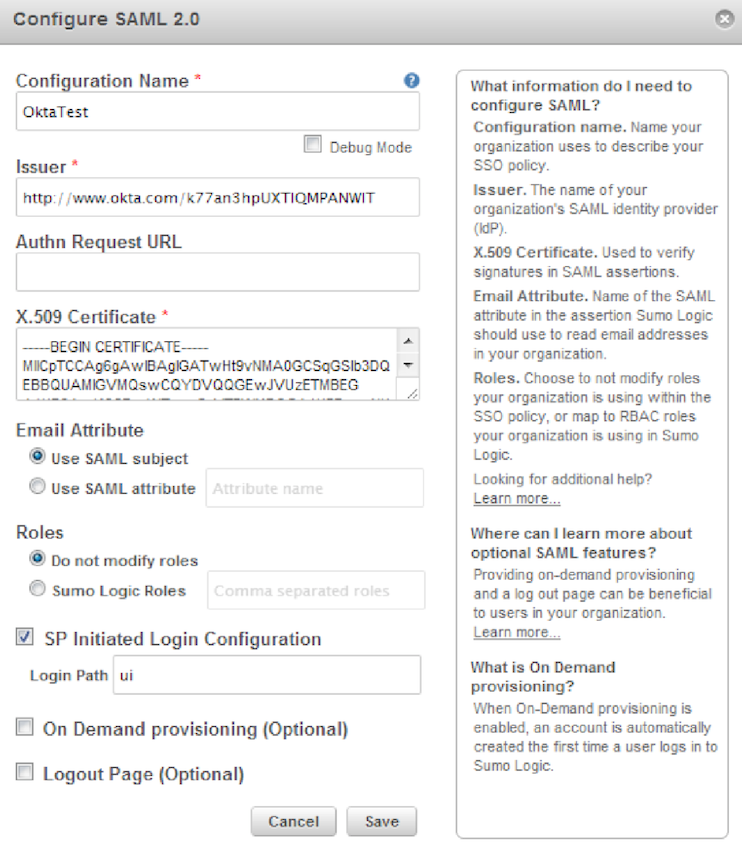

Log in to SumoLogic Using your Credentials.
Hover over the <username> drop-down menu on the upper right corner & click on Security.
Next, click on SAML>Configure.

Enter Configuration Name.
Authn Request URL:
Certificate:
Sign in to the Okta Admin app to have this variable generated for you.It looks like https://service.sumologic.com/sumo/saml/consume/<orgid>
For checking sp-initiated sso use the link given in SP Initiated . For example see screenshot below showinghttps://service.sumologic.com/sumo/saml/get/ui